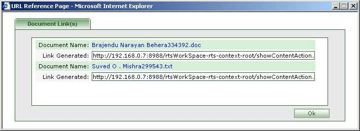

| How to generate links for selected documents?
|
- Resumes,Timesheets,Documents can be selected.
- Select the Resumes or Timesheets or Documents for whom links are to be generated.
- Click on the generate link(s) icon [ ].
|
|

|
|
- Respective Document Name and Link Generated are displayed.
- Users can forward these links to recipients who can then access the respective documents.
- The user himself can click on the document names to ensure that links are generated correctly.
- Press "Ok" to close widow.
|